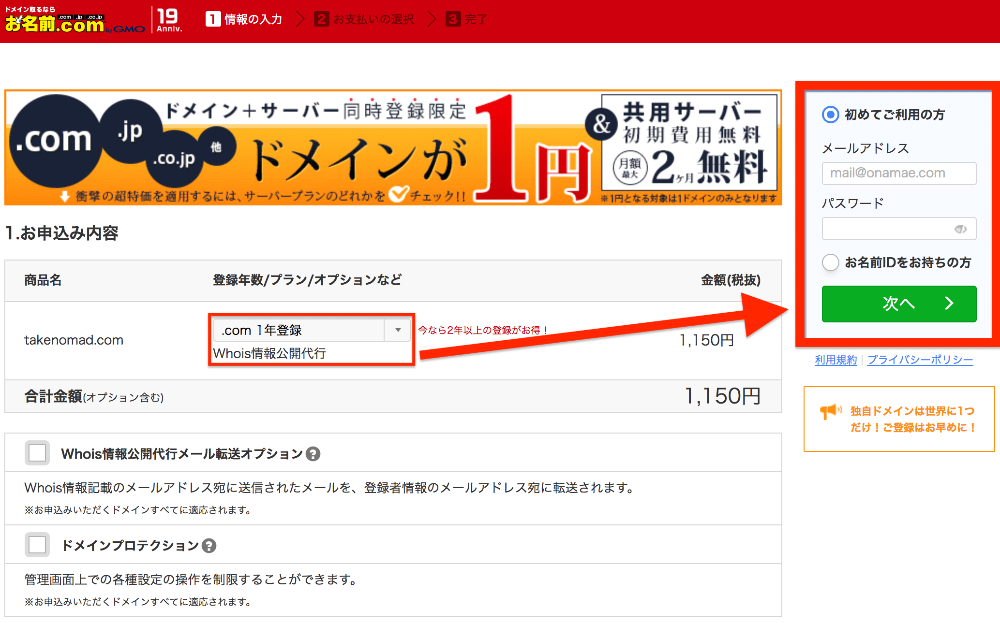

GitHubPagesに独自ドメイン設定後HTTPSに対応|
独自ドメイン取得から設定まで
[Aレコード][CNAME]完全対応
GitHubページでWebページを作ってたけど、独自ドメインを設定したくなった。どうやって設定すればいいの？ついでに独自ドメインのとり方も教えてほしいな。

といった人に向けて記事を書いていきます。
独自ドメインは、長く使うほど価値がうまれます。
⇛詳しい独自ドメインの説明
※外部ページ
自分のサイトは財産なので早めに取得しましょう。
※全て読むのに10分くらいかかります
※ドメイン取得から「CNAME」「Aレコード」設定方法まで全部説明しているため
※いいからドメインのとり方はやく！
という方は
記事が役立つ人
- Githubに独自ドメインを適用したい人
- Aレコードを上手く設定できない人
- お名前.comで独自ドメイン取得したい人
記事内コンテンツ
CNAMEとAレコードの違い
具体的な説明の前に、CNAMEとAレコードの違いについて簡単にお話しますね。
いいからドメイン取得はやく！という方はこちらからどうぞ
もうドメイン取ってるよ！という方はこちら
【それぞれのレコードの特徴】
■Aレコード...独自ドメイン名でそのままアクセスできる。自分のGitHubPagesのIPアドレスとドメインを結びつけるので、IPアドレスを調べて入力しないとダメ。何かの要因でGitHubPagesのIPアドレスが変更されたら都度更新する必要がある。
■CNAME…独自ドメインの頭にwwwなどをつけてアクセスする必要があるので『.』が１つ増える。IPアドレスは調べなくていい。（でもどうせなら独自ドメインに余計なwwwなんて付けたくないですよね！？）
オススメのTLD
赤枠の部分がTLD（トップ・レベル・ドメイン）です。
オススメはメジャーで親しみやすい「.com」か「.net」です。「.info」は昔スパム業者が利用してた影響でオススメしないという声が多数。「.info」で運営してたサイトが急に停止されたという噂も、、、なので、「.com」「.net」「.org」あたりが無難でしょう。
お名前.comでドメイン取得
まずはお名前.comで独自ドメインを取得しないと始まりません。簡単なのでサクっと取得しましょう。
ここではクレジットカードでの購入方法を説明しています。
まずは公式サイトへアクセス
欲しいドメインの名前を入力して右の「検索ボタン」をクリック
※自分の好きな文字を入力して下さい。
好きなTLD（.comなど）を選択して右側の「料金確認へ進む」をクリック
【操作手順】
- 何年登録するかを選択
- 「Whois情報公開代行」の表記があるのを確認
- 初めてご利用の方欄に入力して「次へ」クリック
※必ずメールを受信できるアドレスを入力して下さい。
※他の項目は後から設定できるので今は気にしなくて大丈夫です。
個人情報を入力して
「次へ進む」をクリック
※この情報が直に公開されることはありません。
※Whois情報公開代行
クレジットカードの情報を入力して「申込む」をクリック
この画面で20秒くらい待機します。
受付が完了するので、以下の３点を確認して「↓」をクリック
【確認内容】
- 登録期間
- Whois情報公開代行
- ドメイン自動更新設定済み
！重要！設定したアドレスに以下の内容で本人確認のメールが届きます。
【重要ポイント】
※添付URLを必ずクリック。
※放置でドメインが無効。
※実際のメール画面は次項。
！重要！こんな内容のメールが届くのでURLをクリック。
【重要ポイント】
※添付URLを必ずクリック。
※放置でドメインが無効。
※レジストラとはドメインを登録する事業者のこと。
この画面が出ればOK
続いてお名前.comにログインして順番に確認していきます。
まずは「登録期限日」
「Whois情報公開代行」の確認方法からです。
右上のお名前IDをコピーして「こちら」をクリック
お名前IDとパスワードを入力してログインをクリック
ドメインの最低更新可能年数を確認しておきましょう。
画面下のドメイン名にチェックを入れ、右の更新年数の矢印マークをクリック
表示された1番上の年数が「最低更新可能年数」です。
手動で更新する際はここからできます。
「1年」と確認できますね。
実際に更新する必要はないので、そのまま左上の「ドメイン」タブをクリック
今回はドメインを取得したばかりなので、この案内は関係ありません。
取得したドメイン名をクリック
「ドメイン詳細」「オプション情報」の欄を順に確認します。
まずはドメイン詳細から見ていきましょう。
■確認箇所
- 【登録期限日】・・・この日をすぎるとドメインが自分の物ではなくなる
- 【自動更新】・・・・「設定済み」なら登録期限日が来ても自動で更新してくれる
自動更新の更新年数は、そのドメインの最低更新可能年数です。
※ほとんどのドメインは1年。
オススメはしませんが、自動更新は解除できます。
念の為、操作方法を見ておきましょう。
右の「自動更新」ボタンをクリックしてください。
※自動更新を切るデメリットはこちら
ドメイン名にチェックを入れて「確認画面へ進む」をクリック。
右の申込み内容「解除する」を確認して
⇛「規約に同意し、上記内容を申込む」ボタンをクリック。
これで自動更新を解除出来ます。
※解除しない場合は押さないで下さい
続いて「オプション情報」の確認です。
２つ前の画面に戻って下にスクロールすると「オプション情報」の欄があります。
【確認項目】
- Whois情報公開代行・・・サービス利用中
このサービスを利用しないと、あなたの住所、氏名、電話番号などがネットに公開されるので十分注意してください。なお、サービス利用料金はドメイン設定時と同時に申し込めば無料です。
※申込時に自動でサービス追加されるので安心して下さい。2018年9月21日現在
次はいよいよDNSの設定です。
この作業が終わるとGitHubへ独自ドメインを設定できます。
ページ上部の「TOP」タブをクリックします。
よく利用されるお手続きの「DNSレコードを設定する」をクリック
「内部ドメインの」ドメイン名にチェックを付けて「次へ進む」をクリック
下の方にある「DNSレコード設定を利用する」の設定するボタンをクリック
ここまでが共通の作業です。次項からCNAME、Aレコードそれぞれの方法を見ていきます。
CNAMEでの設定方法
CNAMEでの設定方法を見ていきましょう。
Aレコードで設定したい！という方はこちらからどうぞ
少し下にスクロールすると入力画面があるので例を参考に入力して下さい。
■入力例
- 【ホスト名】・・・www（空白NG）
- 【TYPE】・・・・CNAME
- 【TTL】・・・・・そのまま
- 【VALUE】・・・GitHubで作ったWebサイトのURL ※頭のhttps://と末尾の/は入れない
最後に「追加ボタン」をクリック
下にスクロールして「DNSレコード設定用ネームサーバ変更確認」にチェック
※転送Plusというサービスを利用するため
「設定する」をクリック
30秒ほど待ちます
※後でまた戻ってくるので、この画面は閉じないで下さい。
登録したメールアドレスに変更通知が来るのを待ちます。

次はGitHubへアクセスします。
独自ドメインを設定したいレポジトリを選択。
上部の「Settings」タブを
クリック
下にスクロールして「Custom domain」欄を見つけて下さい。
【操作手順】
- CNAMEの時に設定した独自ドメインを入力
- Saveクリック
- Enforce HTTPSチェック ※これがHTTPS化するボタン。
※CNAMEの場合、頭の「www」をはずせない。
次は、転送Plusの設定です。お名前.comにアクセスします。
上部の「オプション設定」タブをクリック。
転送Plusの「URL転送設定」を選択
ドメイン名の右側「設定する」をクリック
少し下の入力欄に記入します。
■入力例
- 【転送元URL】・・・空
- 【転送先URL】・・・「www」＋CNAMEで設定したドメイン名
- 【転送タイプ】・・・リダイレクト
下にスクロールして「確認画面へ進む」をクリック
設定情報の「設定する」をクリック
30秒ほど待ちます。
メール通知が来るのを確認して作業終了です。
「www.ドメイン名」でGitHubの自作Webページにアクセス出来るのを確認して下さい。
以上でCNAMEでの設定は完了です。お疲れ様でした。
Aレコードでの設定方法
Aレコードで設定すると、ドメインに余計なものがつかないのでオススメです。
まずはIPアドレスを調べます。
ターミナルにアクセスし、コマンド
「dig YOUR-USERNAME.github.io +noall +answer」を入力してEnter
※YOUR_USERNAMEには自分のGithubレポジトリの名前を入力して下さい。
ターミナルは分かりますよね？
分からない人はこちらへ
⇛【ターミナルの使い方】※外部ページ
するとAレコードの情報が出てくるので、この状態でおいておきます。
※これを見ながらAレコード情報を入力します。
次はお名前.comへ移動します。
お名前.comにアクセスしたら、
「TOP」タブから「DNSレコードを設定する」をクリック
「内部ドメイン一覧」ドメイン名を選択して「次へ進む」
DNSレコード設定を利用する右の「設定する」ボタンをクリック
さきほど取得した「Aレコード」の情報を入力します。
■入力例
- 【TYPE】・・・A
- 【TTL】・・・3600
- 【VALUE】・・・取得した値
- 【状態】・・・有効
入力が終わったら「追加」をクリック
取得Aレコードの情報は４つだったので、全部追加します。
※違うのはVALUEの部分だけです。
下にスクロールして左側のボタンをチェック、「確認画面へ進む」をクリック
ネームサーバの更新通知メールを待ちます。
次はGitHubにアクセスします。
独自ドメインを設定したいレポジトリをクリック
上部の「Settings」タブを
クリック
下にスクロールして「Custom domain」欄を見つけて下さい。
【操作手順】
- 独自ドメインを「そのまま」入力
- Saveクリック
- Enforce HTTPSチェック
※これがHTTPS化するボタン。
こんな表示が出てEnforceHTTPSにチェック出来ないことがあります。
見てみると、
「24時間以内にはコンプリートするから待っててね」
という感じの英語が。しばらく待ちましょう。
定期的に監視して、変化があったらすぐチェックしましょう。
最終的に、こんな感じで表示されればOKです。
※Enforce HTTPSより少し上にあります。
「独自ドメイン」のみでgithub.ioの自分のWebサイトにアクセスできる事を確認して下さい。
※全体的に更新の遅いときがあるみたいです。
※僕はEnforce HTTPSに2時間、独自ドメインでアクセスできるまでに1時間待たされました。
まとめ
とても疲れました。注意点として、「CNAME」で設定をするとレポジトリに勝手に「CNAME」ファイルが作成されます。するとローカルのレポジトリクローンとの不整合が発生してpushできなくなる可能性があります。
その場合は、とりあえず「git pull」コマンドをターミナルから投入しましょう。push出来るようになるかもしれません。
⇛githubの基本的な使い方はこちら※外部ページ
【おまけ１】
このブログでは、Bracketsという無料で高機能なテキストエディタを使ったHTMLの基礎をご紹介しています。githubでWebサイトを作る際に、
ぜひ参考にして下さい。
※LPとはHTMLで作成した縦長ページのことです。